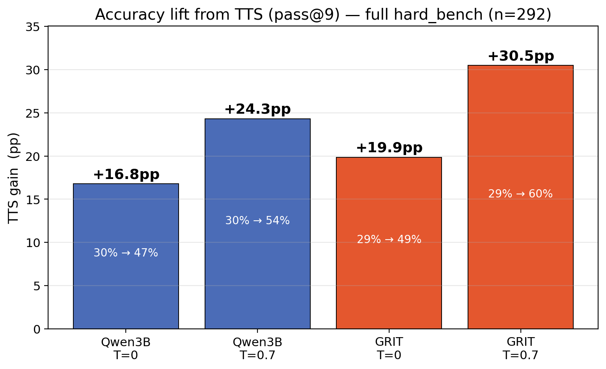
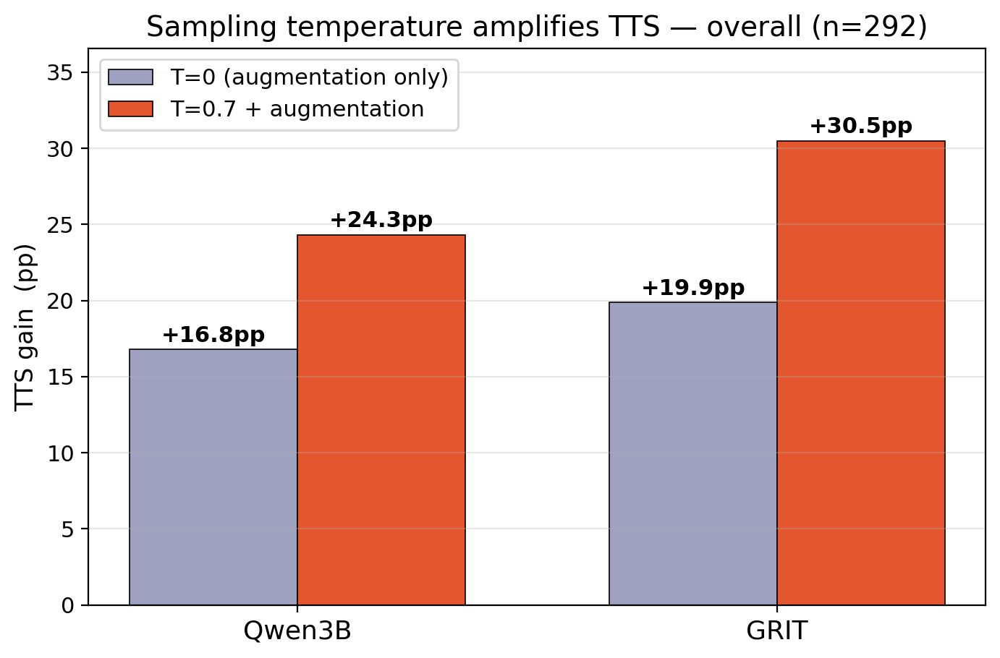
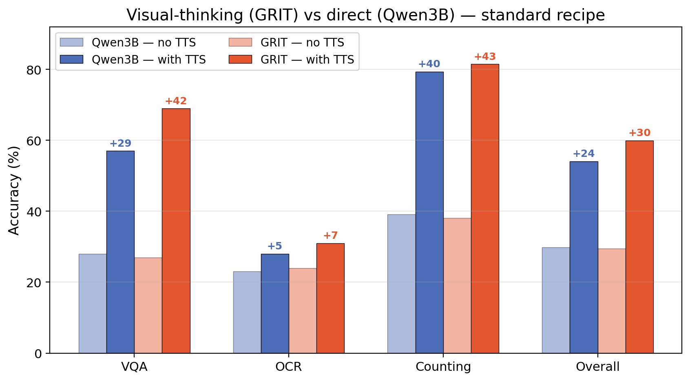
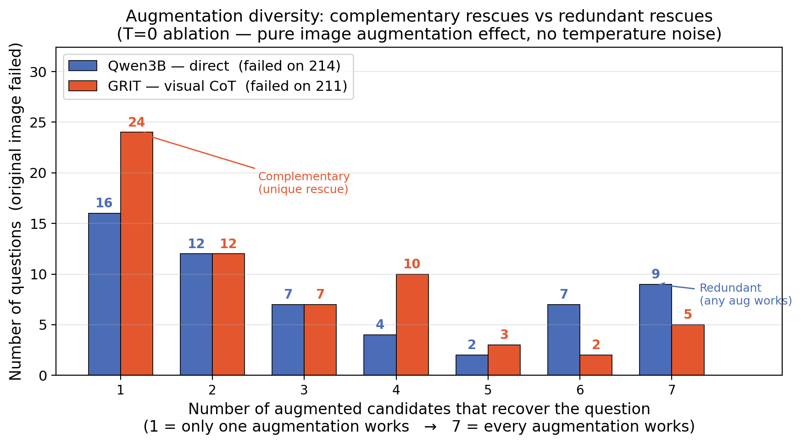
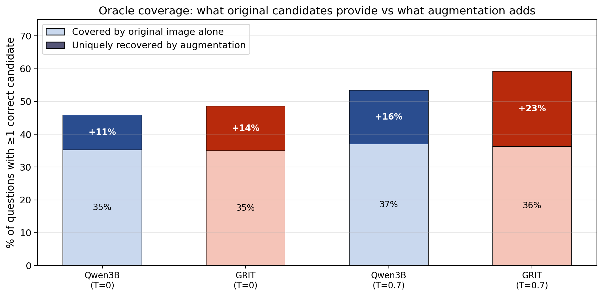

Can generating multiple visual candidates at test time improve accuracy —
and does how the model reasons (direct vs. grounded CoT) change how much it benefits?
Models — Same Backbone, Different Reasoning
Qwen2.5-VL-3B
Direct answer, no CoT
GRIT-3B
Grounded visual CoT
think→
bbox→
rethink→
ans
Benchmark — Hard, Recent, Vision-Indispensable
MMMU-Pro (VQA)
OCRBench v2
MMStar (Counting)
100 + 100 + 92 = 292 questions. Current 7B VLMs score 35–60% — no ceiling.
TTS Recipe — 9 Candidates per Question
Diversity sources: temperature + image augmentation
Original, T=0 (greedy)
Original, T=0.7
Paraphrase, T=0.7
Edge enhance, T=0.7
Grayscale, T=0.7
JPEG recompress, T=0.7
Brightness/contrast, T=0.7
Rotation 90°, T=0.7
Edge + paraphrase, T=0.7
TTS = pass@9: correct if any of 9 candidates is correct.
Headline Accuracy Lift
+30.5pp
GRIT · 29.5% → 59.9%
+24.3pp
Qwen · 29.8% → 54.1%

TTS gain (pass@9 – greedy) across all 4 configs.
Standard recipe (T=0.7 + augmentation) yields the largest lift.
Temperature × Augmentation Compound
+10.7pp
extra gain when adding T=0.7 on top of augmentation alone
Augmentation alone (T=0) gives +19.9pp for GRIT. Temperature pushes it to +30.5pp. Both diversity sources stack.

T=0.7 roughly doubles the TTS gain for both models vs augmentation alone.
GRIT Gains More on Every Task

Identical baselines (~29.5%). Under TTS, GRIT pulls ahead on all tasks. Visual CoT amplifies candidate diversity.
Voting Cannot Close the Gap
Every strategy at or below greedy. Correct answer is a minority vote on 48% of solvable questions.
The signal is in the pool — a confidence-based verifier, not vote counting, is needed to exploit it.
Why GRIT Benefits More — Structural Diversity
10
questions uniquely rescued by Rotation 90° for GRIT (vs 4 for Qwen)
GRIT's bbox-grounding step re-attends to a spatially different image after rotation, creating a new reasoning chain. Qwen has no grounding step — spatial change is just noise.

When the original image fails, how many augmented candidates recover it?
Qwen spikes at N=7 (redundant). GRIT spikes at N=1 — each augmentation rescues different questions.
Per-Augmentation Unique Rescues (T=0 ablation)
| Augmentation |
GRIT unique |
Qwen unique |
| Rotation 90° |
10 |
4 |
| JPEG recompress |
5 |
3 |
| Edge + paraphrase |
4 |
1 |
| Brightness/contrast |
3 |
4 |
| Grayscale |
0 |
3 |
Rotation changes spatial layout; brightness/JPEG change pixels only. GRIT's grounding step amplifies the spatial change into a new reasoning path.
Oracle Coverage — Original vs Augmented Candidates

Augmentation adds more unique coverage for GRIT at both temperatures. Spatial + stochastic diversity compound.